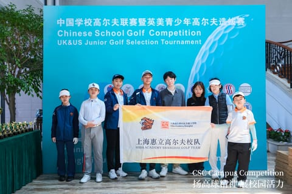
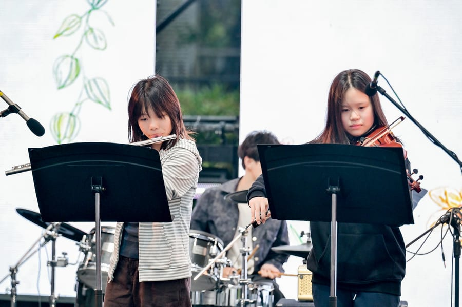
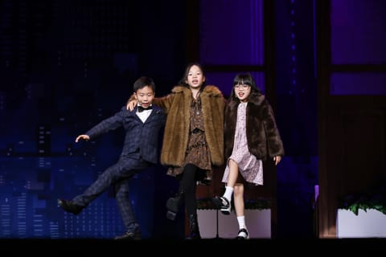

Ethics & hard choices
If you’ve made someone a promise, when is it fair to break it? I like hearing how people answer before and after they learn who else is affected.
Shanghai · Grade 9
Golf is my favourite sport. I’m on my school team in Shanghai, and you can also find me in the flute section of our school orchestra.
I wanted a place to keep our tournament photos and concert clips. There are a few stories here, too, including how my classmates and I ended up playing in a band together.
Golf
I started playing golf in Grade 2. In 2025, my school named me Golfer of the Year.
Since Grade 6, I’ve practised about five hours a week. I represent my school at tournaments in Shanghai, including the SSSA Campus Golf League, where I finished third in 2024 and fourth in 2025.
I also play on the junior tour. One result I’m especially proud of is finishing second at the 2024 MJGT Shanghai Sports Culture Tournament, where more than 100 players competed.

Music
I first tried the flute in Grade 4. I’ve played it for four years now, and I’ve just started learning piccolo.
I joined my school’s symphony orchestra in middle school. I play in school concerts and festivals, and sometimes I get to choose the music with my classmates. That’s how we ended up playing Viva la Vida at our school festival.
Outside school, I play flute with the Shanghai International Youth Orchestra and have performed at Jaguar Shanghai Symphony Hall. I’ve also competed on my own and placed second in a solo flute competition.

Theatre
In Grade 5, I performed in Annie in English. I love the numbers where the whole cast gets to sing together.
I’ve also studied Chinese spoken drama, or huaju, and performed in a regional competition production of The Orphan of Zhao (Zhao Shi Gu Er). One thing I like about acting with someone else is that a pause or a look from them can change how I say my next line.
I joined my school’s Jing Ju (Peking opera) club because I wanted to learn an art form that’s part of my Chinese heritage. When I practise with a fan and water sleeves, I’m learning gestures that performers have passed down for generations.

Notebook
In primary school I reached the Shanghai regional final of the English Speech and Debate Pentathlon. I still like hearing two people give completely different answers to the same question.
If you’ve made someone a promise, when is it fair to break it? I like hearing how people answer before and after they learn who else is affected.
When two accounts of the same event disagree, I want to know who wrote each one. Sometimes I write a poem in the voice of someone who might have lived through it.
I like looking at a map of a river and then a map of the towns around it. Where did people settle? What changes downstream?
Gallery